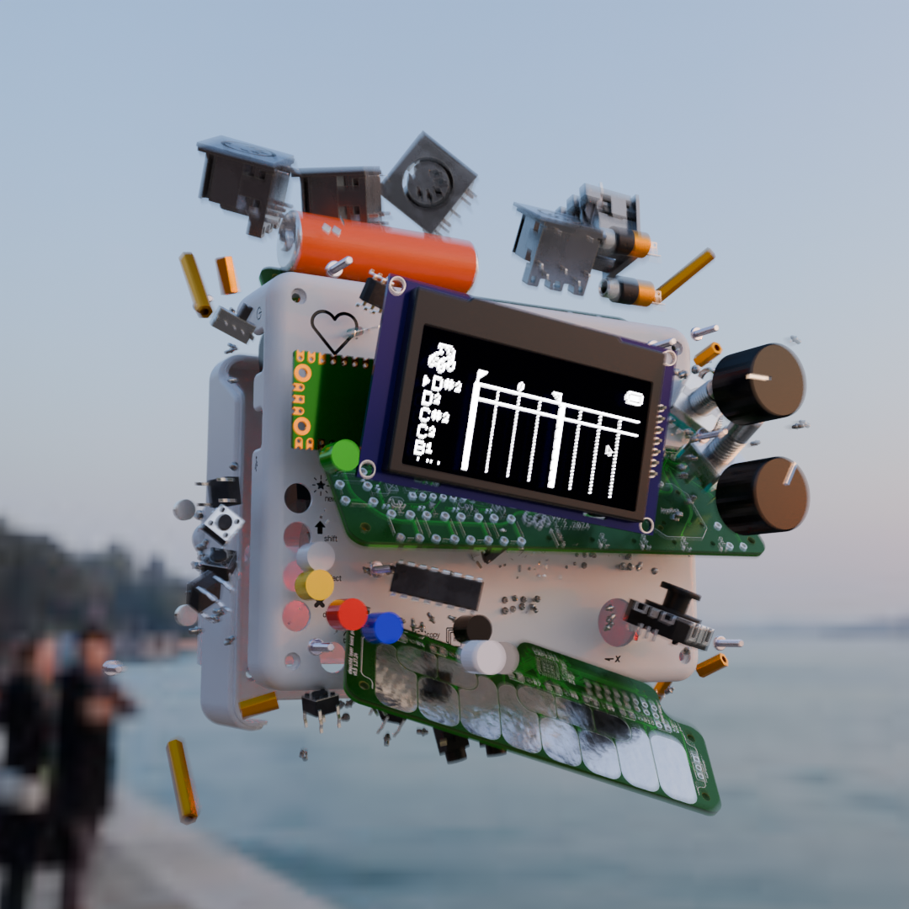

- 5 MIDI Out/Thru ports:
- 4 hardware outputs
- 1 MicroUSB output
- 2 MIDI In ports:
- 1 hardware INPUT
- 1 MicroUSB INPUT
- 3 CV 3.5mm TRS Outputs
- Supports sending Gate, Clock, and Sync signals
- CV ouput can comply with the 12V Eurorack standard, but the Stepchild must be connected to a Eurorack power supply
- 2 Push Encoders, 8 Push Buttons, 8 LEDs, Analog Joystick
- Capacitive touch keyboard
- Monochrome OLED screen
- Exposed ADC from onboard Raspberry Pi Pico <3
- MicroUSB ~or~ 3xAAA batteries
(Battery life is around ~24hrs using Eneloop rechargeable AAA's)
- Connectable to 12v Eurorack Hardware
- ~20 minutes of canvas
- Live recording, looping, and playback
- Automation, midi curves, and motion sequencing
- 127 tracks per sequence
- Loop chain for odd time signatures, polyrhythyms
- Flexible software clock
- Preset and modulated swing
- MIDI FX and editing tools
- 8 generative midi instruments
is a midi generator, editor, and sequencer designed to be a portable notebook for musicians working with
music hardware. It's also your baby.
The Stepchild is released under the CC BY-NC-SA 4.0 license as an open-source project.
This means that the software and design schematics can be used freely, by anyone, to build or contribute to the Stepchild's design with the requirement
that any published project also be released under the same creative commons license. Additionally, please credit The Stepchild as a source